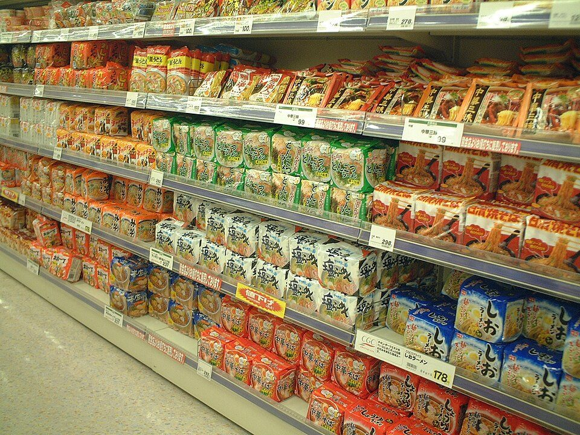

食品表示の読み方：パッケージの裏をどこから見るか（原材料・添加物・アレルギー・期限・栄養成分）
要点まとめ
食品のパッケージの裏には、原材料やアレルギー、期限、栄養成分など、たくさんの情報が書かれています。この記事では、どこから見ればよいかと、それぞれの表示のルールを、消費者庁の食品表示基準やQ&A、消費者向けのパンフレットでまとめました。

表示がある食品・ない食品
食品表示のルールは、食品表示法と食品表示基準で決まっています。今の制度は2020年4月に完全に始まり、加工食品には原則として栄養成分表示が義務になりました[8]。ただし、売り方によっては表示の義務がありません。
| 売り方 | 表示の義務 |
|---|---|
| 容器包装に入った加工食品（メーカーの商品など） | 原材料名・添加物・期限・アレルギー・栄養成分などの表示が必要[1] |
| 店で作って、その店で売る物（製造小売・インストア加工） | 原材料名・内容量・栄養成分などの表示がいらない[1][9][10] |
| 仕入れた物を、小分けや再包装をしただけの物 | インストア加工に当たらず、通常の表示が必要[9] |
| 量り売り、注文を受けてその場で詰める弁当・惣菜 | 表示の義務がない[9][7] |
| 外食（店内で食べる・出前） | 表示の義務がない。アレルゲンの情報提供も義務ではない[1][11][7] |
表示がないことは、入っていないことではない
外食や量り売りのように表示の義務がない売り方では、アレルギーの原因になる食品が使われていても、表示がないことがあります。消費者庁の消費者向けパンフレットも、外食・中食の飲食店での食物アレルギーの表示は法律上の義務ではないと説明しています[12]。アレルギーのある人は、お店の人に確かめる必要があります。
パッケージの裏を見る順番
| 名称 | ミートボール |
|---|---|
| 原材料名 | 鶏肉（国産）、たまねぎ、パン粉、しょうゆ、砂糖、植物油脂、食塩／調味料（アミノ酸等）、増粘剤（加工でん粉）、（一部に小麦・大豆・鶏肉を含む） |
| 内容量 | 200g |
| 賞味期限 | 20XX.XX.XX |
| 保存方法 | 要冷蔵（10℃以下） |
| 製造者 | ○○食品株式会社 ○○県○○市… |
筆者が作った架空の例です。「／」より後ろが添加物、最後の括弧がアレルギーの一括表示、「鶏肉（国産）」が原料原産地の表示です。
消費者庁のパンフレットの構成をもとに、筆者が見る順番の例をまとめました[12]。
- 1
名称で、何の食品かを確かめる
- 2
期限（消費期限か賞味期限か）と、保存方法を見る
- 3
原材料名を見る。多い順に並び、「／」の後ろなどが添加物
- 4
アレルギーは、原材料の後の括弧か、最後の「（一部に…を含む）」を見る
アレルギーのある人は、ここを最初に[12]
- 5
栄養成分表示で、何g当たりかを確かめてから、熱量と食塩相当量を見る
- 6
気になることは、製造者などの連絡先に問い合わせる
原材料名と添加物
原材料は、重さの多い順に並ぶ
2種類以上でできた原材料は、括弧で内訳を書く
食品表示基準は、原材料を、原材料に占める重さの割合の高いものから順に書くとしています[1]。しょうゆのように2種類以上の原材料でできたもの（複合原材料）は、名前の後の括弧に内訳を書きます。ただし、複合原材料が製品の5%未満なら内訳を省略できます[1]。
添加物は、「／」や改行、別の欄で分ける
添加物の中でも、重さの多い順に並ぶ
添加物も、添加物の中で重さの多い順に、原則として物質名で書きます[1]。原材料との区切りは、「／」で区切る、改行する、添加物の欄を別に設ける、のいずれかです[2][13]。
| 書き方 | 内容 |
|---|---|
| 物質名 | 原則。物質の名前で書く[1] |
| 用途名を併記 | 甘味料、着色料、保存料、増粘剤・安定剤・ゲル化剤または糊料、酸化防止剤、発色剤、漂白剤、防かび剤の8つ。例「保存料（ソルビン酸K）」[1][2] |
| 一括名 | 香料、調味料、酸味料、乳化剤、膨張剤、pH調整剤など14種類はまとめた名前で書ける[1][2] |
| 省略できる | 加工助剤、キャリーオーバー（原材料に含まれ、製品では効果を出さないもの）など[1][2] |
「無添加」「不使用」の表示にもルールがある
何を使っていないのかが分からない「無添加」は問題に
消費者庁は2022年3月に、添加物の不使用表示のガイドラインをつくりました。不使用表示を一律に禁止するものではありませんが、何を使っていないのか分からない単なる「無添加」や、健康や安全と結びつけた表示など、10の類型を、消費者の誤認につながるおそれがあるものとして示しています[14]。
原料原産地は、一番多い原材料について書く
「国内製造」は、原料が国産という意味ではない
2022年4月以降に作られる加工食品には、原則として重さの割合が一番多い原材料の原産地が表示されます[15][16]。書き方は「国別重量順表示」「製造地表示」「又は表示」「大括り表示」の4種類です[17]。「小麦粉（国内製造）」のような製造地表示は、原料の小麦が国産という意味ではありません[15]。
「遺伝子組換えでない」は、混入がないときだけ
2023年4月から、表示の条件が厳しくなった
大豆やとうもろこしについて、遺伝子組換え農産物の混入を5%以下に抑えて分けて管理したものは、以前は「遺伝子組換えでない」と書けました[4]。2023年4月からは、そうした管理をしていることを事実に沿って書くことになり、「遺伝子組換えでない」と書けるのは、混入が認められない場合だけになりました[4][18]。
アレルギー表示
| 区分 | 品目 |
|---|---|
| 表示の義務（特定原材料、9品目） | えび、カシューナッツ、かに、くるみ、小麦、そば、卵、乳、落花生（ピーナッツ） |
| 表示を推奨（特定原材料に準ずるもの、20品目） | アーモンド、あわび、いか、いくら、オレンジ、キウイフルーツ、牛肉、ごま、さけ、さば、大豆、鶏肉、バナナ、ピスタチオ、豚肉、マカダミアナッツ、もも、やまいも、りんご、ゼラチン |
出典: 消費者庁「アレルギー表示とは（令和8年4月時点）」[3]、「加工食品の食物アレルギー表示ハンドブック」[19]。
カシューナッツは、2028年3月まで表示がない商品もある
2026年4月に義務になり、2年間の準備期間がある
同じ日に、ピスタチオが推奨の品目に加わりました[20]。くるみは2023年3月に義務になり、経過措置は2025年3月末で終わっています[4]。推奨の20品目は、表示がなくても食品表示法の違反にはなりません[9]。
表示は原材料ごとの「個別表示」が原則
「入っているかもしれない」という表示は認められていない
アレルギー表示は、原材料の後に括弧で書く個別表示が原則で、例外として最後にまとめて書く一括表示もできます[3]。「卵」を「玉子」「たまご」と書くような言い換えも認められています[3]。製造工程で混入するおそれ（コンタミネーション）の注意書きは推奨されていますが、単に「入っているかもしれない」と書く可能性表示は認められていません[3]。
見方: 消費者庁の資料にある、すぐに症状が出るタイプの食物アレルギーの全国調査の結果です。鶏卵が最も多く、くるみ、牛乳、小麦、落花生と続きます[3]。
消費期限と賞味期限
| 項目 | 消費期限 | 賞味期限 |
|---|---|---|
| 意味 | 期限を過ぎたら食べないほうがよい期限[5] | おいしく食べることができる期限。過ぎても品質が保たれていることがある[5][1] |
| 食品の例 | 弁当、調理パン、そうざい、生菓子類、生めん類[6] | スナック菓子、即席めん類、缶詰[6] |
| 書き方 | 年月日[1] | 年月日。作ってから3か月を超えるものは年月でもよい[1] |
期限は「開封前に、表示の方法で保存したとき」のもの
開けた後は、期限内でも安全とは限らない
消費者庁は、期限は開封前に表示どおりに保存した場合のもので、開封後は期限内でも安全に食べられるとは限らないとしています[6]。賞味期限を正しく理解している消費者は約53%という調査もあります[21]。
栄養成分表示
5つの項目が、決まった順に並ぶ
熱量・たんぱく質・脂質・炭水化物・食塩相当量
栄養成分表示の義務の項目は、熱量、たんぱく質、脂質、炭水化物、食塩相当量の5つで、この順番は変えられません[13]。量は100g、100ml、1食分、1包装などのいずれか当たりで書かれ、1食分の場合はその量も書かれます[13]。
食塩相当量は、ナトリウムの2.54倍
ナトリウム400mgなら、食塩相当量は約1.0g
食品表示基準は、食塩相当量を、ナトリウムの量に2.54をかけたものとしています[1]。ナトリウム400mgなら、400×2.54÷1000で約1.0gです（筆者の計算例）。食品表示で使う1日の目安（栄養素等表示基準値）は、食塩相当量7.0g、熱量2,200kcalです[1]。
| 目安 | 量 |
|---|---|
| 食品表示の栄養素等表示基準値 | 7.0g[1] |
| 食事摂取基準（2025年版）の目標量・18歳以上の男性 | 7.5g未満[23] |
| 同・18歳以上の女性 | 6.5g未満[23] |
| 高血圧・慢性腎臓病の重症化予防 | 男女とも6.0g未満[23] |
栄養素等表示基準値は2025年3月に改正され、2028年3月末までは古い値で書かれた商品もあります[4]。食事摂取基準は2025年度から使われています[24]。
「ゼロ」「低」「オフ」には基準がある
「糖類ゼロ」は100g当たり0.5g未満
「ゼロ」「ノン」「無」などの含まない旨の表示は、食品100g（飲料は100ml）当たりで、熱量5kcal未満、脂質0.5g未満、糖類0.5g未満などの基準があります[1]。「○○オフ」「○○カット」「減塩」などは、比べた食品より一定量以上少なく、かつ25%以上少ない場合に使えます[1][25]。
健康や機能をうたう表示
| 種類 | しくみ |
|---|---|
| 特定保健用食品（トクホ） | 食品ごとに、有効性や安全性について国の審査を受け、許可を得る[27] |
| 栄養機能食品 | 決められたビタミン・ミネラルなどが基準の量を満たせば、国に個別の許可申請をしなくても機能を表示できる（自己認証）[28] |
| 機能性表示食品 | 事業者が販売前に消費者庁に届け出る。国は審査しない[29] |
これら以外の食品は、効果や機能を表示できません[28]。保健機能食品は、病気の治療や予防のために食べるものではありません[30]。
機能性表示食品は、届出の内容を調べられる
パッケージの届出番号で、消費者庁のデータベースを検索
消費者庁の届出情報の検索では、パッケージに書かれた届出番号や商品名で調べられ、消費者は一般消費者向けの資料（様式I）を確かめるよう案内しています[31]。消費者庁は、届け出た内容を超えた広告をうのみにしないよう呼びかけています[29]。
今回確認できなかった点
- 店で作って包装して売る物に、アレルギー表示や期限表示が必要だと明記した消費者庁の資料（条文からは必要と読める）
- 「糖質ゼロ」「糖質オフ」の扱いを明記した消費者庁の資料
- 栄養機能食品の基準の改正（2026年10月）で、どの成分の量がどう変わったか
- 機能性表示食品の健康被害の情報を、何日以内に提供するか（基準は「速やかに」）
出典（31件）
閲覧日はいずれも2026年11月10日
- 食品表示基準（平成27年内閣府令第10号）（e-Gov法令検索）
- 食品添加物表示に関するマメ知識（PDF）（消費者庁）
- アレルギー表示とは（令和8年4月時点、PDF）（消費者庁）
- これまでの食品表示基準の改正概要について（PDF）（消費者庁）
- 期限表示とは（PDF）（消費者庁）
- 食品期限表示の設定のためのガイドライン（2025年3月、PDF）（消費者庁食品表示課）
- 食品表示基準Q&A 別添 アレルゲンを含む食品に関する表示（PDF）（消費者庁）
- 新たな食品表示制度の完全施行について（2020年4月1日、PDF）（消費者庁）
- 食品表示基準Q&A 第2章 加工食品（PDF）（消費者庁）
- 食品表示法に基づく栄養成分表示のためのガイドライン 第6版（2026年10月、PDF）（消費者庁食品表示課）
- 食品表示基準Q&A 第1章 総則（PDF）（消費者庁）
- 知っておきたい食品の表示（消費者向け）令和8年10月版（PDF）（消費者庁）
- 食品表示基準 別記様式1〜4（PDF）（消費者庁）
- 食品添加物の不使用表示に関するガイドライン（2022年3月30日、PDF）（消費者庁）
- 全ての加工食品に原料原産地が必ず表示されます!（PDF）（消費者庁）
- 新たな加工食品の原料原産地表示制度に関する情報（消費者庁）
- 加工食品の原料原産地表示制度（PDF）（消費者庁）
- 遺伝子組換え食品表示制度に関する情報（消費者庁）
- 加工食品の食物アレルギー表示ハンドブック（令和8年4月、PDF）（消費者庁）
- 事務連絡「アレルゲンを含む食品に関する表示について」（2026年4月1日、PDF）（消費者庁食品表示課）
- 食品期限表示の設定のためのガイドラインの見直し検討会 取りまとめ（2025年3月、PDF）（消費者庁）
- 食品ロス削減の取組（消費者庁）
- 日本人の食事摂取基準（2025年版）各論 ミネラル（多量ミネラル）（PDF）（厚生労働省）
- 「日本人の食事摂取基準（2025年版）」策定検討会報告書（厚生労働省）
- 栄養成分表示を活用してみませんか？（リーフレット、PDF）（消費者庁）
- 日本版包装前面栄養表示ガイドライン（2026年2月、PDF）（消費者庁食品表示課）
- 特定保健用食品について（消費者庁）
- 栄養機能食品について（消費者庁）
- 機能性表示食品について（消費者庁）
- 保健機能食品について（消費者庁）
- 機能性表示食品の届出情報検索（消費者庁）
写真・画像の出典（1件）
- スーパーの食品売り場（イメージ）
写真: Kanesue／Wikimedia Commons（パブリックドメイン）